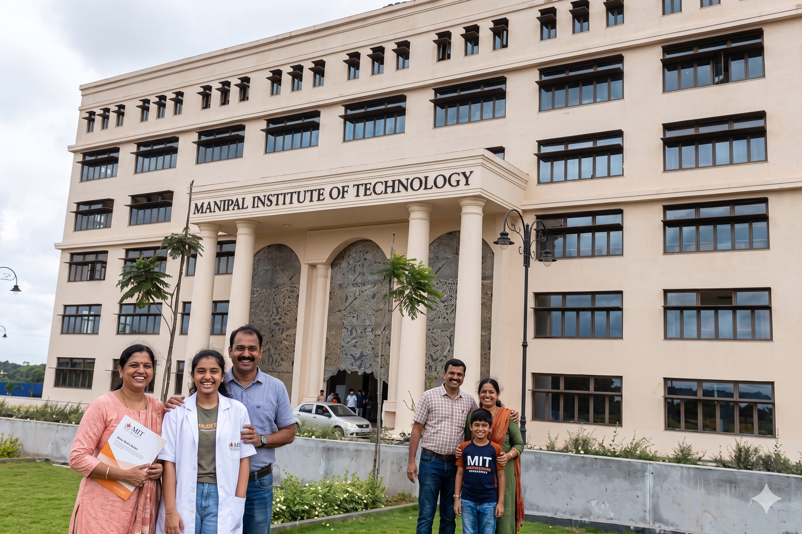

The Director's Welcome
Understand the vision, values, and expectations of MIT Bengaluru.

Parent's Guide
Welcome to the MIT Bengaluru family. As your ward begins a professional journey, your support evolves from daily guidance to steady encouragement, informed involvement, and trust.
Aarambh 2026
Engineering at MAHE is rigorous. The first year includes a Common Cycle where students from all branches study foundation sciences. The move from school to a professional college can be demanding, especially in the first few weeks, so open communication at home matters.
July 20, 2026
A focused morning at Dr. Ramdas M Pai Convention Hall to understand the academic, residential, and welfare systems that will shape your ward's experience.
Understand the vision, values, and expectations of MIT Bengaluru.
Learn how the credit system, evaluation methods, and first-year Common Cycle work.
A dedicated Q&A with leadership on safety, placements, hostels, and student support.
SLcM Portal
Parents receive access to the Student Life Cycle Management portal to stay aware of academic progress without replacing the student's own responsibility.
Track whether your ward remains above the mandatory threshold.
Follow mid-term performance, assignments, and early academic signals.
Stay updated on holidays, exam schedules, and university announcements.
Campus Safety & Wellness
A 24/7 medical room and ambulance standby are available for student health needs.
The Student Support Centre provides professional counseling for students navigating the transition.
MIT Bengaluru is a ragging-free campus with a zero-tolerance policy.
Urgent Concerns
For welfare or academic concerns, parents can reach the relevant office directly. Hostel briefing details will include the Chief Warden's office contact information.